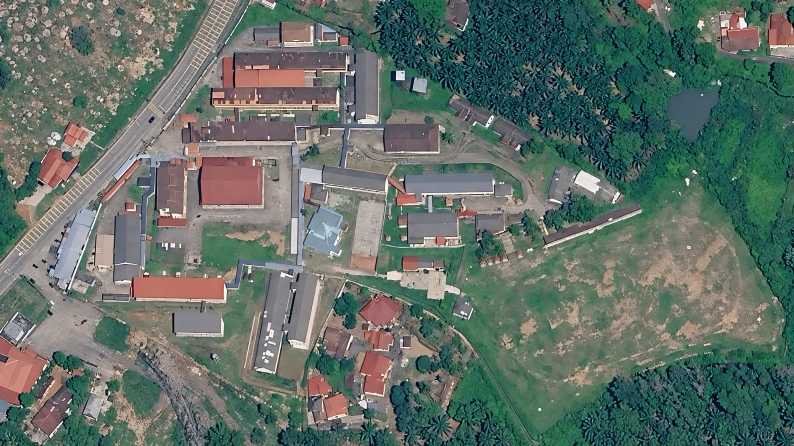

Peta Lokasi Karnival
Sila ketik pada nombor lokasi di peta untuk melihat maklumat acara.

Petunjuk Lokasi (Semak senarai jika peta tidak jelas):
1 Dewan Alamanda
2 Padang Sekolah
3 Dewan Datuk Dr Haji Ihsan
4 Dewan Lavender
5 Kelas 5 Ekonomi / Prinsip Akaun
6 Padang Mini
7 Kelas Tingkatan 1
8 Perpustakaan & Google Classroom
9 Makmal Bestari 3 dan 4